Как работать в системе торговому представителю, руководителю, складу, бухгалтерии и администратору — по шагам, с экранами.
Адрес системы: https://zhan01.github.io/dairyhub/
Резервный адрес: https://dairyhub-kz.vercel.app
Демо-пароль для всех ролей: DairyHub2026
Версия: ноябрь 2026 · демонстрационная версия
Содержание
Разделы сгруппированы по ролям. Каждый сотрудник видит только те разделы, которые нужны для его работы.
1. Что такое DairyHub
2. Вход и регистрация
3. Представитель: экран «Сегодня»
4. Представитель: рабочая смена и GPS
5. Представитель: визит в точку
6. Представитель: точки, задачи, уведомления
7. Руководитель: обзор
8. Руководитель: сигналы
9. Руководитель: задачи
10. Руководитель: команда и GPS-трек
11. Руководитель: торговые точки
12. Руководитель: аналитика
13. Руководитель: планы и премии
14. Оборудование (морозильники)
15. Склад: поставки и задачи
16. Бухгалтерия: дебиторка
17. Администратор
18. Профиль и уведомления
19. Где хранятся данные
20. Частые вопросы
Роли и доступ
Роль
Устройство
Что видит
Торговый представитель
Телефон
Маршрут на день, визиты, смена с GPS, свои точки, задачи, уведомления, свой план
Руководитель
Компьютер
Все сигналы и задачи, команда, точки, аналитика, планы, оборудование, поставки, дебиторка
Склад
Компьютер
Задачи склада, сигналы по поставкам, поставки, оборудование
Бухгалтерия
Компьютер
Задачи бухгалтерии, сигналы по задолженности, дебиторка
Администратор
Компьютер
Всё, что видит руководитель, плюс пользователи, приглашения, справочники, правила, журнал
DairyHub · Инструкция пользователя2
1Что такое DairyHub
Платформа для отдела продаж молочной компании. Она не только фиксирует работу, но и сама находит отклонения, предлагает вероятные причины и передаёт задачу тому подразделению, которое может её решить.
Как устроен цикл
Данные. Представитель отмечает визит по GPS, заполняет наличие на полке, проверяет морозильник, фотографирует, оформляет заказ. Продажи, поставки, задолженность и температура морозильников поступают в систему.
Сигнал. Каждый день DairyHub сравнивает показатели с нормой. Например, продажи точки за 7 дней упали больше чем на 30 % к среднему за 4 недели, морозильник не найден на месте, температура выше −15 °C дольше 2 часов.
Гипотеза. К сигналу система добавляет вероятные причины с учётом фактов: были ли задержки поставок, заблокирована ли отгрузка из-за долга, пропускались ли визиты.
Задача. Под каждую причину создаётся задача с ответственным подразделением и сроком (SLA): склад, бухгалтерия, представитель или руководитель.
Контроль. После закрытия задач сигнал 14 дней остаётся «на контроле». Если продажи восстановились, сигнал закрывается автоматически.
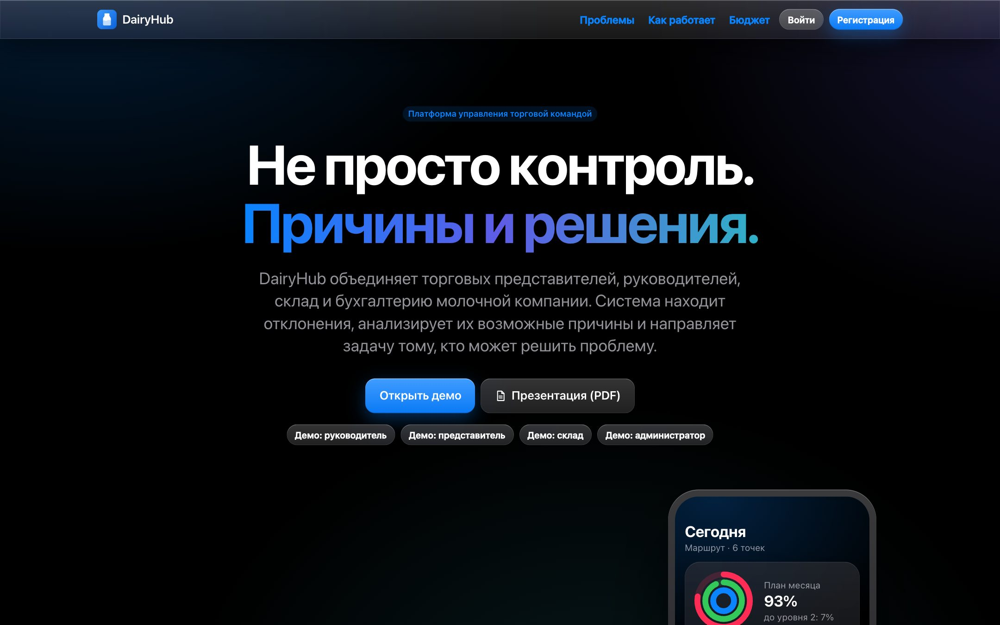
Главная страница. Отсюда — вход, регистрация компании и демо-доступ.
DairyHub · Инструкция пользователя3
2Вход и регистрация
Учётные записи корпоративные: компанию регистрирует администратор, сотрудники присоединяются по коду приглашения.
Вход сотрудника
Откройте адрес системы и нажмите «Войти».
Введите рабочий e-mail и пароль. Отметьте «Запомнить меня на 30 дней» на личном устройстве; без отметки сессия действует 12 часов.
Система откроет нужный раздел сама: представителя — на мобильном экране «Сегодня», остальных — в веб-панели.
После 5 неверных попыток вход блокируется на 15 минут. Забыли пароль — обратитесь к администратору: он выдаст временный, и система попросит сменить его при входе.
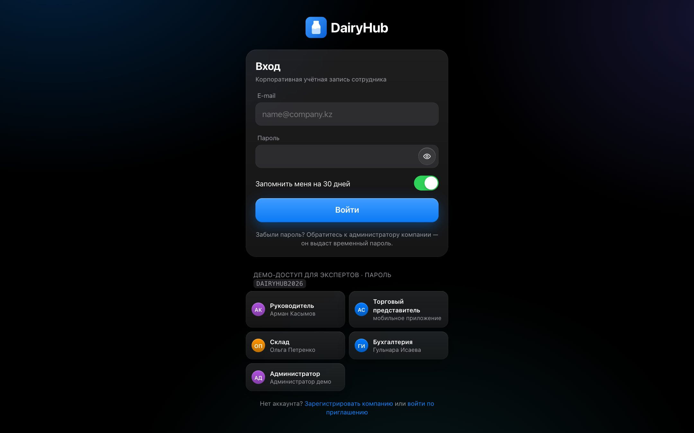
Вход в веб-панель
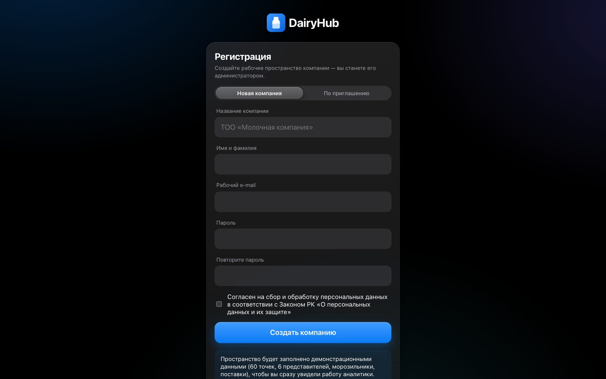
Регистрация: новая компания или вход по коду приглашения
Регистрация
Новая компания. Укажите название компании, своё имя, e-mail и пароль (не менее 8 символов, буквы и цифры). Первый пользователь становится администратором.
По приглашению. Введите код, который выдал администратор. Роль уже задана в коде, срок действия — 7 дней.
Демо-доступ
На странице входа есть кнопки демо-ролей: руководитель, представитель, склад, бухгалтерия, администратор. Пароль всех демо-записей — DairyHub2026. Демо-данные обновляются каждый день.
DairyHub · Инструкция пользователя4
3Представитель: экран «Сегодня»
Главный экран представителя на телефоне. Всё, что нужно на день, — на одном экране.
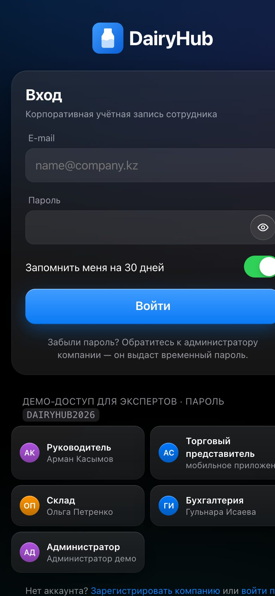
Вход с телефона
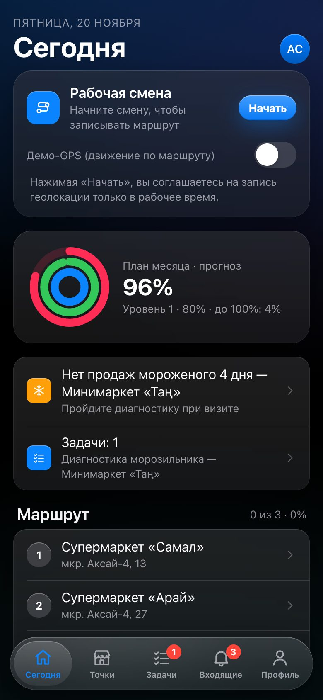
Экран «Сегодня»
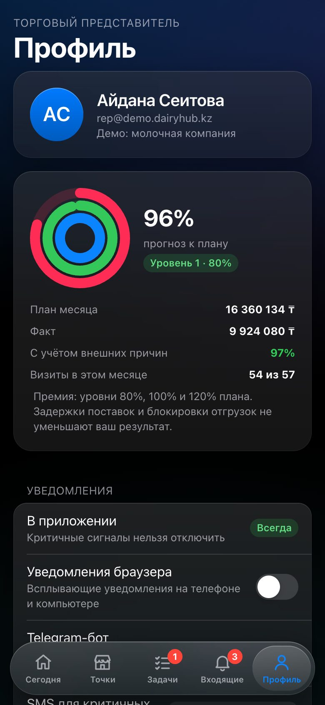
Профиль и план
Что на экране
Рабочая смена — кнопка «Начать» запускает запись GPS-трека (раздел 4).
Кольца плана — прогноз выполнения месячного плана и уровень премии: 80 %, 100 %, 120 %.
Сигналы и задачи — что DairyHub просит проверить в точках сегодня.
Маршрут — точки на сегодня по порядку и счётчик выполненных визитов.
Нижняя панель — Сегодня, Точки, Задачи, Входящие, Профиль.
Сайт можно добавить на главный экран телефона: в Safari — «Поделиться → На экран Домой», в Chrome — «Добавить на главный экран». Он будет открываться как приложение.
DairyHub · Инструкция пользователя5
4Рабочая смена и GPS-трек
GPS записывается только во время смены — между «Начать» и «Завершить». Вне смены координаты не собираются.
До начала смены
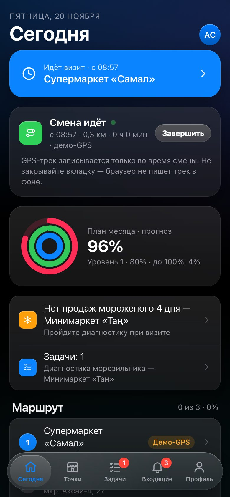
Смена идёт: пробег, время, точек GPS
Как работать
Утром на экране «Сегодня» нажмите «Начать» в карточке «Рабочая смена».
Разрешите браузеру доступ к геолокации — запрос появится один раз.
В течение дня держите вкладку DairyHub открытой. Пока смена идёт, экран телефона не гаснет.
В конце дня нажмите «Завершить».
Важно. Браузер пишет GPS, только пока вкладка DairyHub на экране. Если свернуть браузер или заблокировать телефон, запись приостановится и продолжится при возвращении. На треке этот участок будет прямой линией.
Демо-GPS
Переключатель «Демо-GPS» имитирует движение по маршруту. Он нужен для показа системы вне Алматы. Такие смены и визиты помечаются «Демо-GPS» и видны руководителю.
Напоминания
В 18:00 приходит «Итоги дня» — сколько визитов выполнено и какие отчёты не заполнены.
Если задача просрочена, уведомление получают исполнитель и руководитель.
DairyHub · Инструкция пользователя6
5Визит в торговую точку
Визит состоит из отметки о прибытии и шести шагов отчёта. Время и координаты фиксируются автоматически и не редактируются.
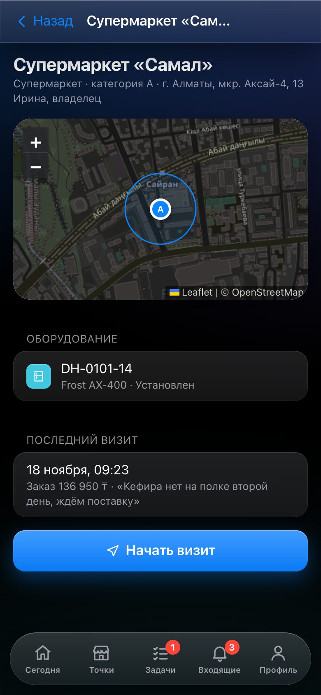
1. Точка из маршрута → «Начать визит»
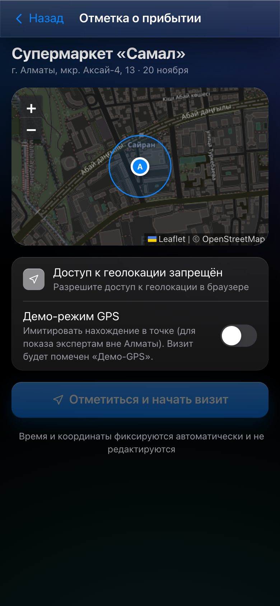
2. Отметка: карта и геозона точки
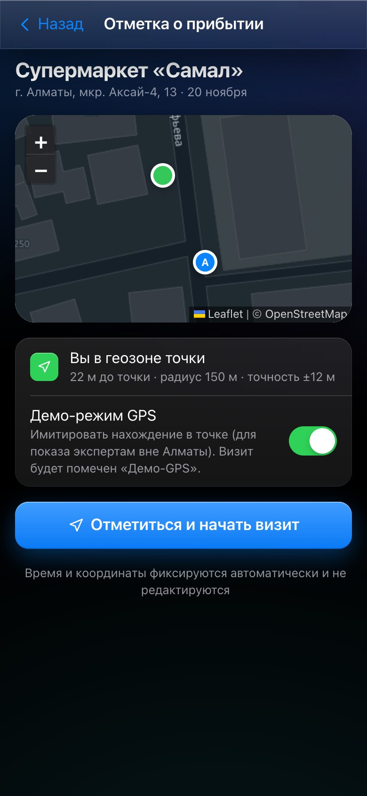
3. «Вы в геозоне» → «Отметиться»
Отметка о прибытии
В маршруте нажмите на точку и затем «Начать визит».
Система определит местоположение и покажет расстояние до точки. Радиус геозоны настраивает администратор.
Если вы в геозоне — нажмите «Отметиться и начать визит».
Если вне геозоны — укажите причину (например, точка переехала). Отметка сохранится с пометкой, руководитель её увидит.
Если появилось «Доступ к геолокации запрещён», разрешите геолокацию для сайта в настройках браузера и обновите страницу.
DairyHub · Инструкция пользователя7
5Визит: шаги отчёта
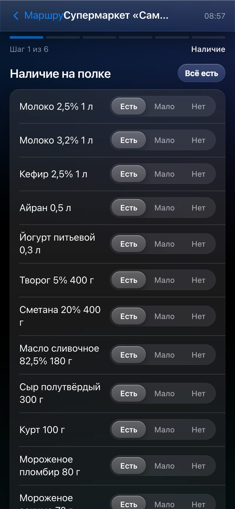
Шаг 1. Наличие на полке
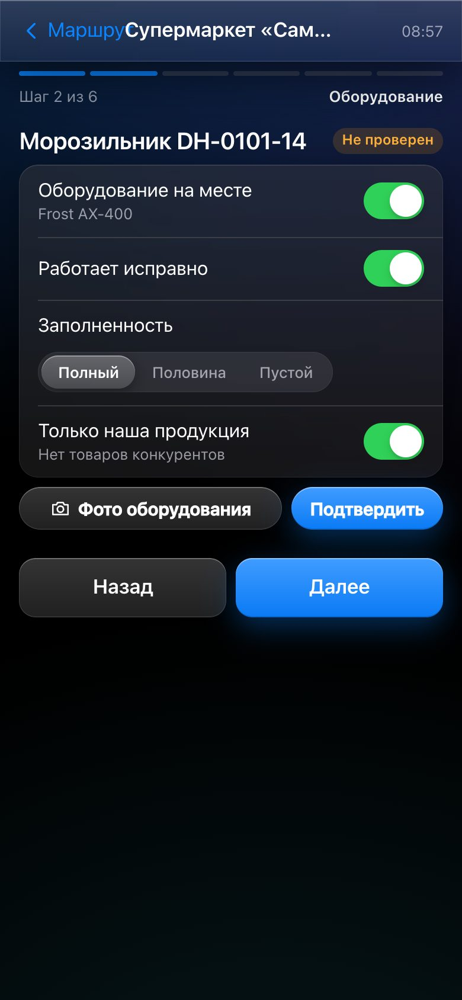
Шаг 2. ОборудованиеШаг 3. Конкуренты и цены
Наличие. По каждому товару: «Есть», «Мало» или «Нет». Кнопка «Всё есть» отмечает всё сразу.
Оборудование. Подтвердите, что морозильник на месте и работает, укажите заполненность и есть ли в нём чужой товар, сделайте фото и нажмите «Подтвердить».
Конкуренты. Отметьте активность конкурентов и соотношение наших цен с ценами конкурента.
Шаг 4. Фотоотчёт
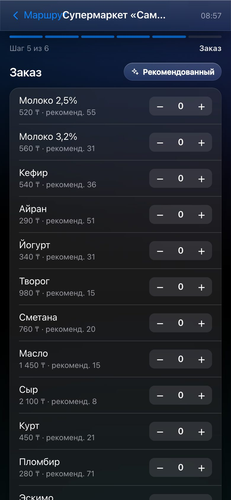
Шаг 5. Заказ
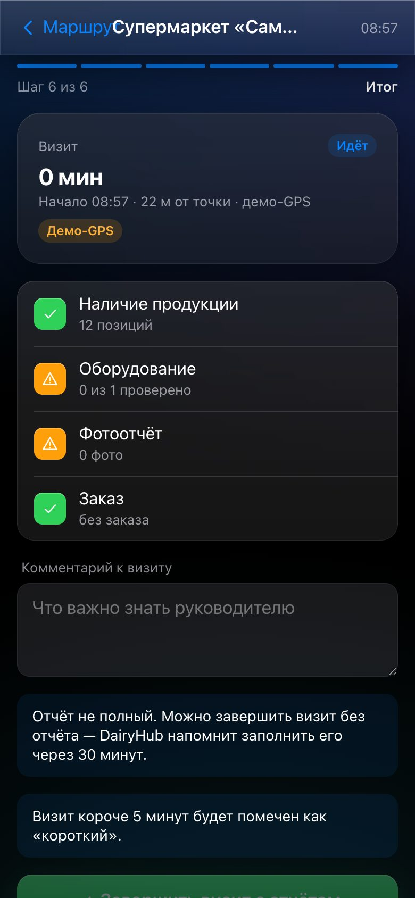
Шаг 6. Итог и завершение
Фото. Полка, морозильник, ценники. На фото автоматически ставятся дата и время.
Заказ. Кнопка «Рекомендованный» подставит количество по продажам точки; его можно изменить.
Итог. Проверьте отчёт, добавьте комментарий и завершите визит. Без полного отчёта DairyHub напомнит его заполнить; визит короче 5 минут помечается «коротким».
DairyHub · Инструкция пользователя8
6Точки, задачи, уведомления
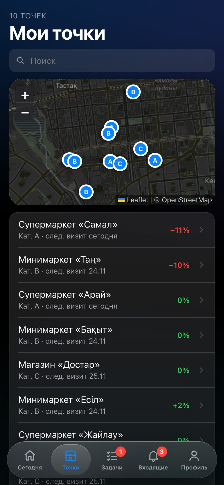
Мои точки: карта и изменение продажКарточка точкиСигнал с подсказками по причинам
Точки — все закреплённые точки на карте и списком, с изменением продаж за неделю. В карточке — оборудование, последний визит, кнопка внепланового визита.
Сигнал — что не так в точке и возможные причины. Это подсказка, а не оценка работы: если причина другая, напишите об этом в комментарии к задаче.
Задачи представителяВходящие уведомления
Задачи — что поручено вам: от DairyHub или руководителя, со сроком. В задаче можно оставить комментарий, приложить фото, отметить выполнение или нажать «Причина не подтвердилась».
Входящие — уведомления о новых сигналах, задачах и напоминания. «Прочитать все» снимает отметки.
DairyHub · Инструкция пользователя9
7Руководитель: обзор
Веб-панель открывается на компьютере. Слева — меню разделов, вверху — колокольчик уведомлений и выход.
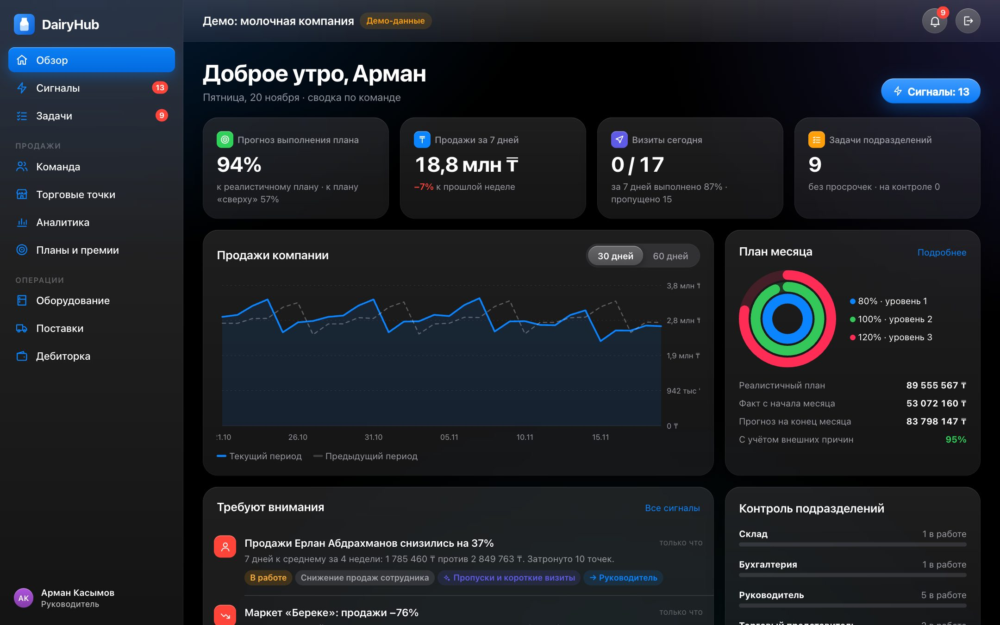
Обзор: выполнение визитов, выручка, задачи, выполнение плана, приоритетные сигналы и команда
С чего начинать день
Посмотрите блок приоритетных сигналов — что требует решения сегодня.
Проверьте просроченные задачи: у каждой есть ответственное подразделение и срок.
Оцените команду: выполнение визитов и плана по каждому представителю. Строка открывает карточку сотрудника.
DairyHub · Инструкция пользователя10
8Сигналы
Отклонения, которые DairyHub нашёл автоматически, с вероятными причинами и ответственными.
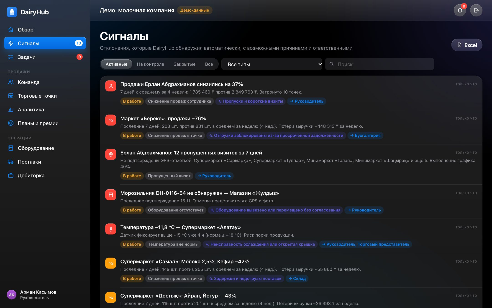
Список сигналов: фильтры по статусу и типу, поиск, выгрузка в Excel
Типы сигналов
Сигнал
Когда появляется
Снижение продаж в точке
Продажи за 7 дней ниже среднего за 4 недели больше чем на 30 %
Снижение продаж сотрудника
То же по всем точкам представителя
Пропущенный визит
Плановый визит не подтверждён GPS-отметкой
Оборудование отсутствует
Представитель не нашёл морозильник на месте
Температура вне нормы
Выше −15 °C дольше 2 часов при норме не выше −18 °C
Морозильник без продаж
Морозильник стоит, а мороженое не продаётся несколько дней
Статусы: НовыйВ работеНа контролеЗакрыт. Пороги настраивает администратор в разделе «Правила».
DairyHub · Инструкция пользователя11
8Карточка сигнала
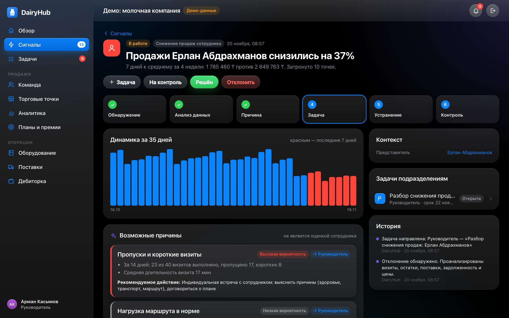
Верх карточки: что произошло, график продаж, связанные точки и задачи
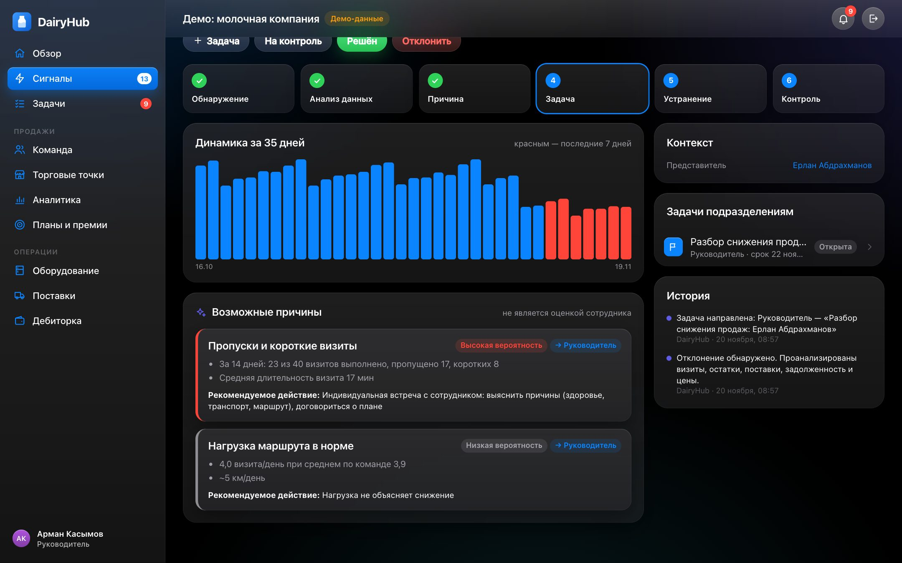
Возможные причины с фактами и история действий
Каждая причина подкреплена фактами из данных: задержки поставок, блокировка отгрузки, пропуски визитов.
По каждой причине создана задача ответственному подразделению. Можно добавить свою задачу.
Если все причины отклонены исполнителями, сигнал возвращается руководителю на повторный разбор.
DairyHub · Инструкция пользователя12
9Задачи
Межотдельные задачи, созданные DairyHub и руководителями, с контролем сроков.
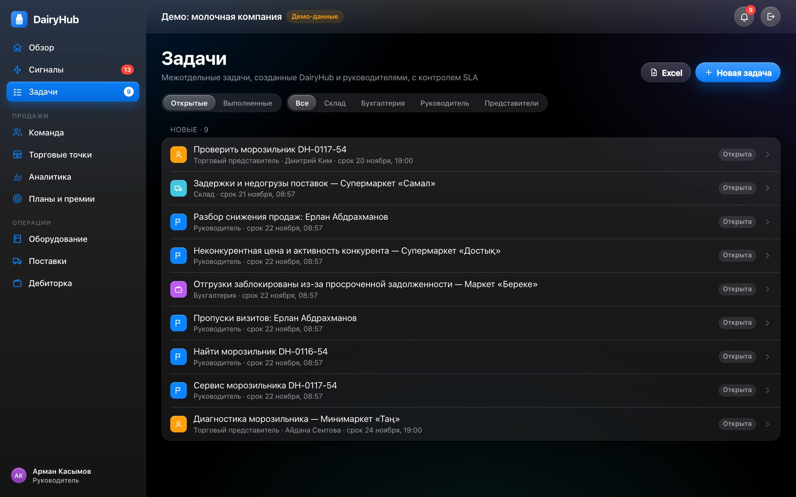
Список задач: группы по срокам, выгрузка в Excel, кнопка «Новая задача»
Жизненный цикл задачи
Задача создаётся автоматически по сигналу или вручную кнопкой «Новая задача».
Исполнитель видит её у себя, комментирует, прикладывает фото.
Итог — «Выполнено» или «Причина не подтвердилась» с комментарием.
После просрочки срока исполнитель и руководитель получают по одному уведомлению.
DairyHub · Инструкция пользователя13
10Команда и GPS-трек
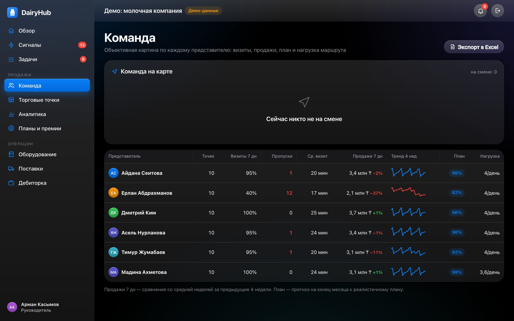
Команда: карта сотрудников на смене и таблица показателей
В разделе «Команда» вверху — карта: где сейчас находятся сотрудники, начавшие смену. Ниже — выполнение визитов, плана, средняя длительность визита по каждому. Строка открывает карточку сотрудника.
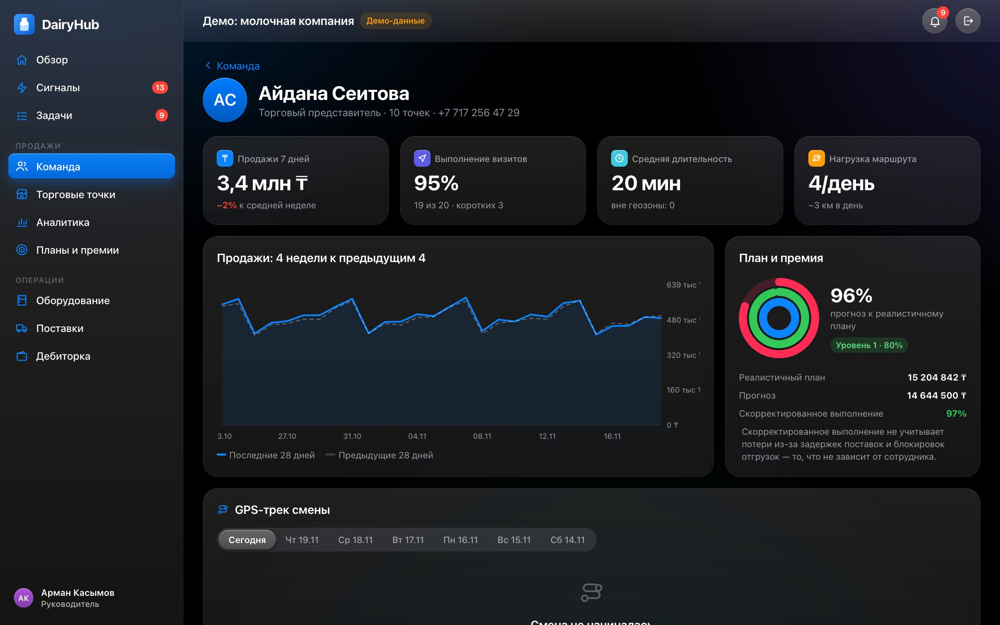
Карточка сотрудника: продажи, визиты, выполнение плана
DairyHub · Инструкция пользователя14
10GPS-трек смены
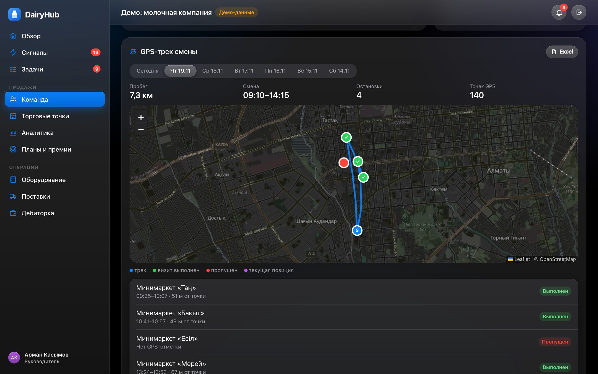
Трек за выбранный день: пробег, время смены, остановки, визиты на карте
Под картой — визиты дня со временем и расстоянием от точки при отметке.
Отдельно показываются остановки вне торговых точек дольше 8 минут.
Кнопка Excel выгружает трек.
Пробег не учитывает GPS-дрожание меньше 15 м и невозможные скачки быстрее 150 км/ч.
DairyHub · Инструкция пользователя15
11Торговые точки
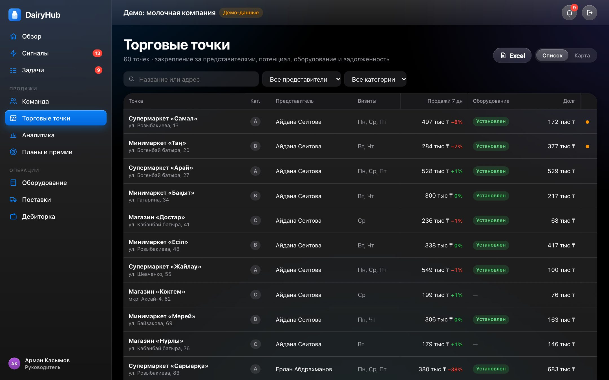
Все точки: фильтры, карта, таблица с продажами и выгрузкой в Excel
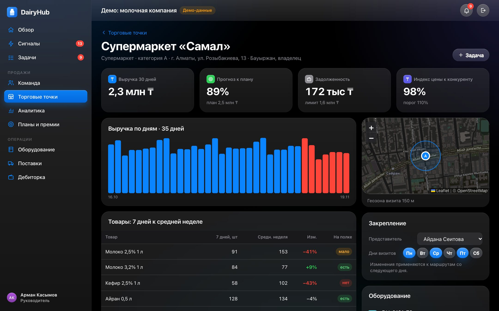
Карточка точки: продажи за 28 дней, план, расположение, оборудование, дни визитов
В карточке точки руководитель меняет дни визитов: маршрут представителя перестроится автоматически.
DairyHub · Инструкция пользователя16
12Аналитика продаж
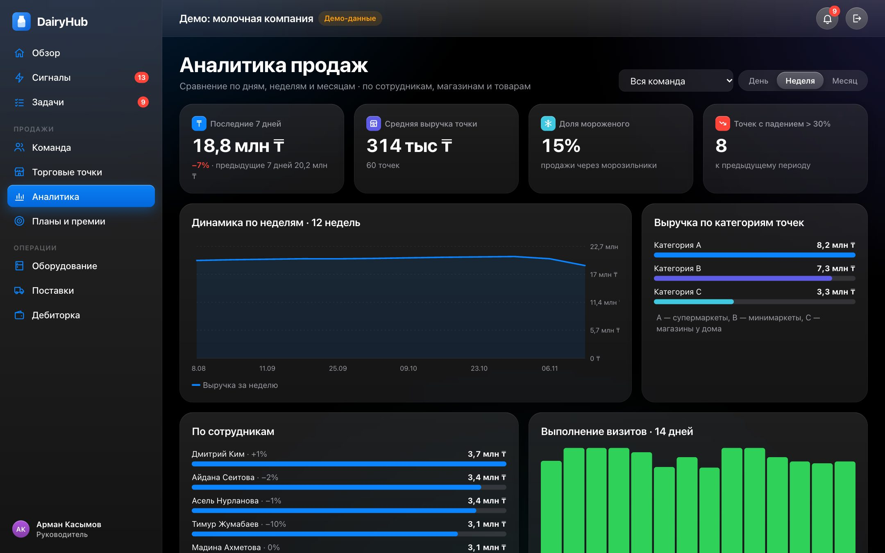
Аналитика: период День / Неделя / Месяц, фильтр по сотруднику
Выручка за период и сравнение с предыдущим.
Динамика за 12 недель, выручка по категориям точек A, B, C.
Продажи по сотрудникам и выполнение визитов за 14 дней.
Таблица по товарам с выгрузкой в Excel.
Точки с наибольшим снижением и ростом — нажатие открывает карточку точки.
DairyHub · Инструкция пользователя17
13Планы и премии
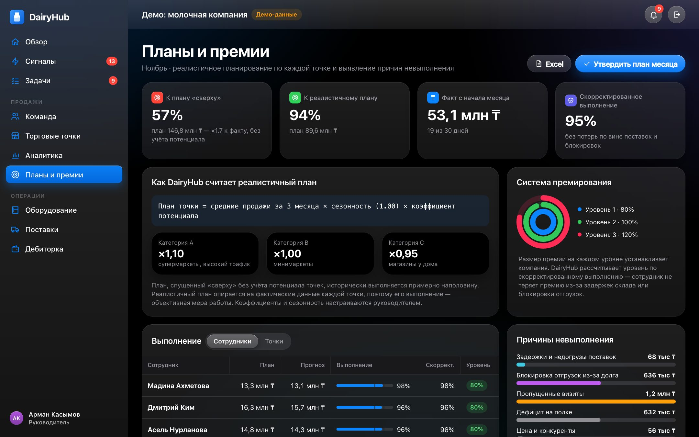
Сравнение плана «сверху» и реалистичного плана, система премирования
Как считается реалистичный план
План точки = средние продажи за 3 месяца × сезонность × коэффициент категории (A, B, C). Коэффициенты и сезонность настраивает руководитель.
Действия
Утвердить план месяца — фиксирует план; автор и время сохраняются.
Изменить в строке точки — корректировка плана с обязательным основанием. Запись попадает в журнал аудита.
Скорректированное выполнение исключает потери по вине поставок и блокировок: сотрудник не теряет премию из-за чужих задержек.
DairyHub · Инструкция пользователя18
13Выполнение и причины невыполнения
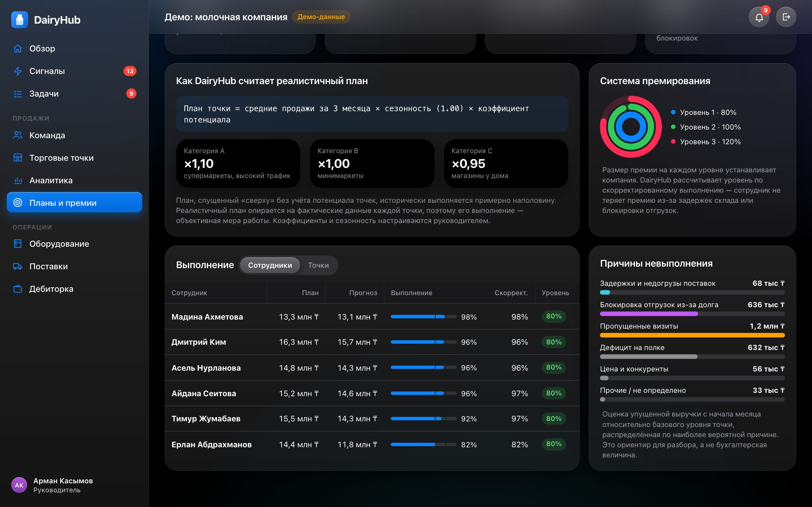
Выполнение по сотрудникам и точкам, уровни премий, причины невыполнения
Блок «Причины невыполнения» показывает, сколько выручки упущено с начала месяца и по какой вероятной причине: поставки, задолженность, визиты. Это ориентир для разбора, а не бухгалтерская величина.
DairyHub · Инструкция пользователя19
14Оборудование (морозильники)
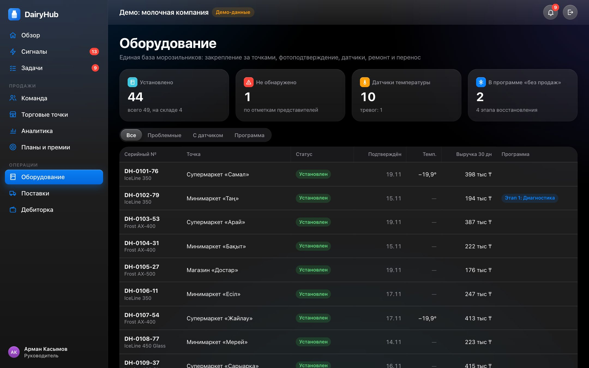
Реестр морозильников: статусы, точки, последняя проверка
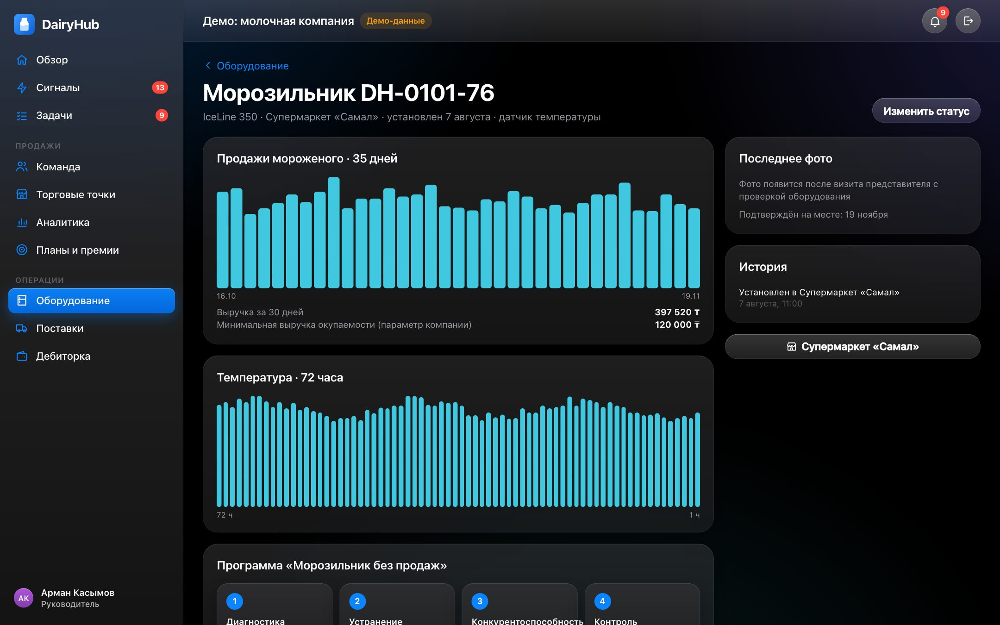
Карточка морозильника: продажи, температура, история проверок
Программа по морозильникам идёт в 4 этапа: диагностика причин → устранение → перемещение в точку с потенциалом → контроль. При «нет продаж» DairyHub запускает этап 1 и ставит задачу представителю.
DairyHub · Инструкция пользователя20
15Склад: поставки и задачи
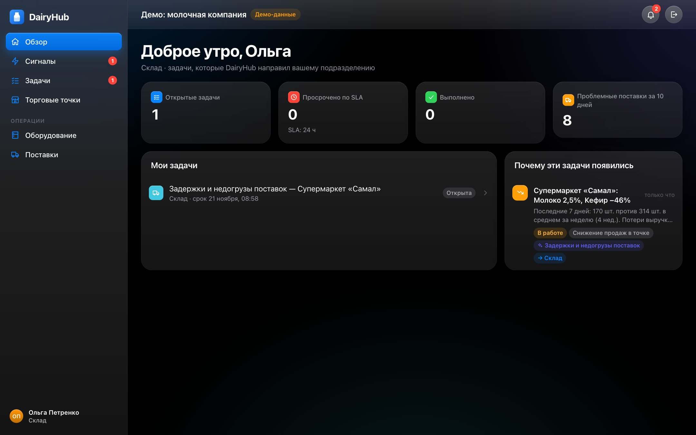
Обзор склада: свои задачи и сигналы по поставкам
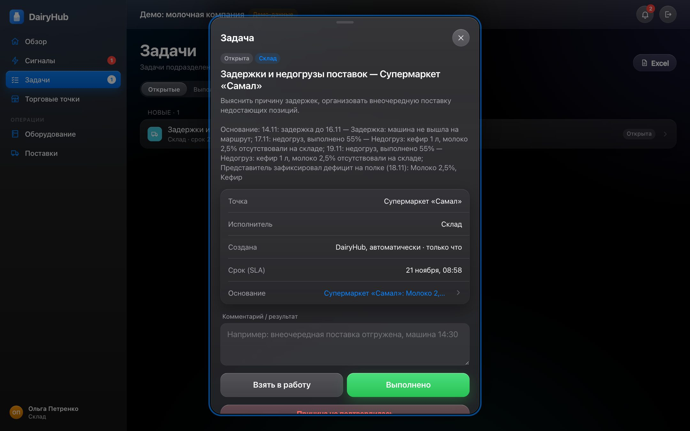
Задача складу: основание, срок, комментарий, итог
Сотрудник склада видит задачи своего подразделения. Например, «Задержки и недогрузы поставок» по точке, где упали продажи. Откройте задачу, проверьте отгрузки, напишите комментарий и отметьте «Выполнено» или «Причина не подтвердилась».
DairyHub · Инструкция пользователя21
15Поставки
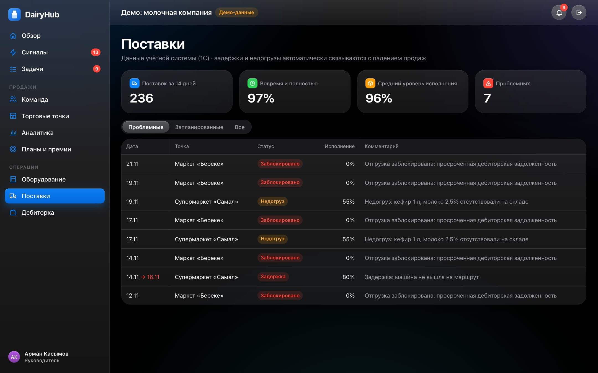
Поставки за 14 дней: доля «вовремя и полностью», уровень исполнения, проблемные отгрузки
Смена пароля — не менее 8 символов, буквы и цифры.
Уведомления в приложении включены всегда: критичные сигналы нельзя отключить.
Уведомления браузера — всплывающие сообщения на телефоне или компьютере, пока сайт открыт.
Telegram и SMS — помечены «Промышленная версия», работают после подключения сервера.
19Где хранятся данные
В демо-версии база данных находится в браузере устройства (IndexedDB). Система полноценно записывает визиты, фото, GPS-треки, сигналы, задачи, уведомления и журнал аудита, и они сохраняются после закрытия браузера.
Ограничение демо: данные не передаются между устройствами. Визит, сделанный на телефоне, руководитель увидит только на этом же телефоне. Для работы команды нужна серверная база данных — она входит в промышленную версию вместе с хранением персональных данных на территории РК.
DairyHub · Инструкция пользователя26
20Частые вопросы
Не определяется местоположение
Разрешите геолокацию для сайта в настройках браузера, включите GPS на телефоне, выйдите на открытое место. При точности хуже 100 м система предупредит.
Отметился не в той точке
Время и координаты не редактируются. Напишите комментарий в итоге визита — руководитель увидит его.
Пропала часть трека
Браузер не записывает GPS, если вкладка свёрнута или телефон заблокирован. Держите DairyHub открытым во время смены.
Не согласен с причиной в сигнале
Нажмите в задаче «Причина не подтвердилась» и опишите, что на самом деле. Если все причины отклонены, сигнал вернётся руководителю.
Работа без интернета
Ранее открытая система запускается без сети, вверху появляется оранжевый баннер «Нет сети — работа продолжается». Данные сохраняются на устройстве.
Забыл пароль
Обратитесь к администратору компании — он выдаст временный пароль.
Как выгрузить данные
Кнопка Excel есть в разделах Сигналы, Задачи, Команда, Точки, Аналитика, Планы, Журнал и в GPS-треке.